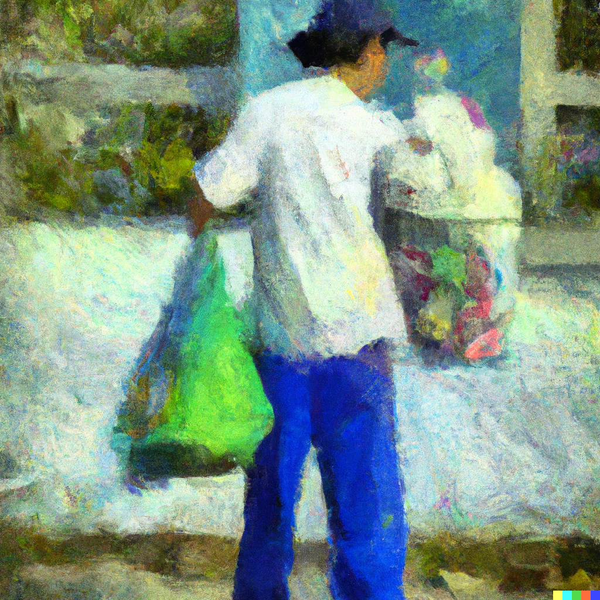
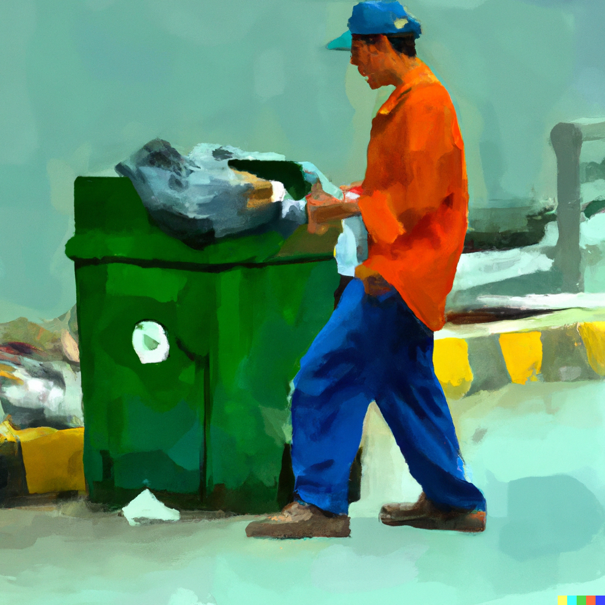
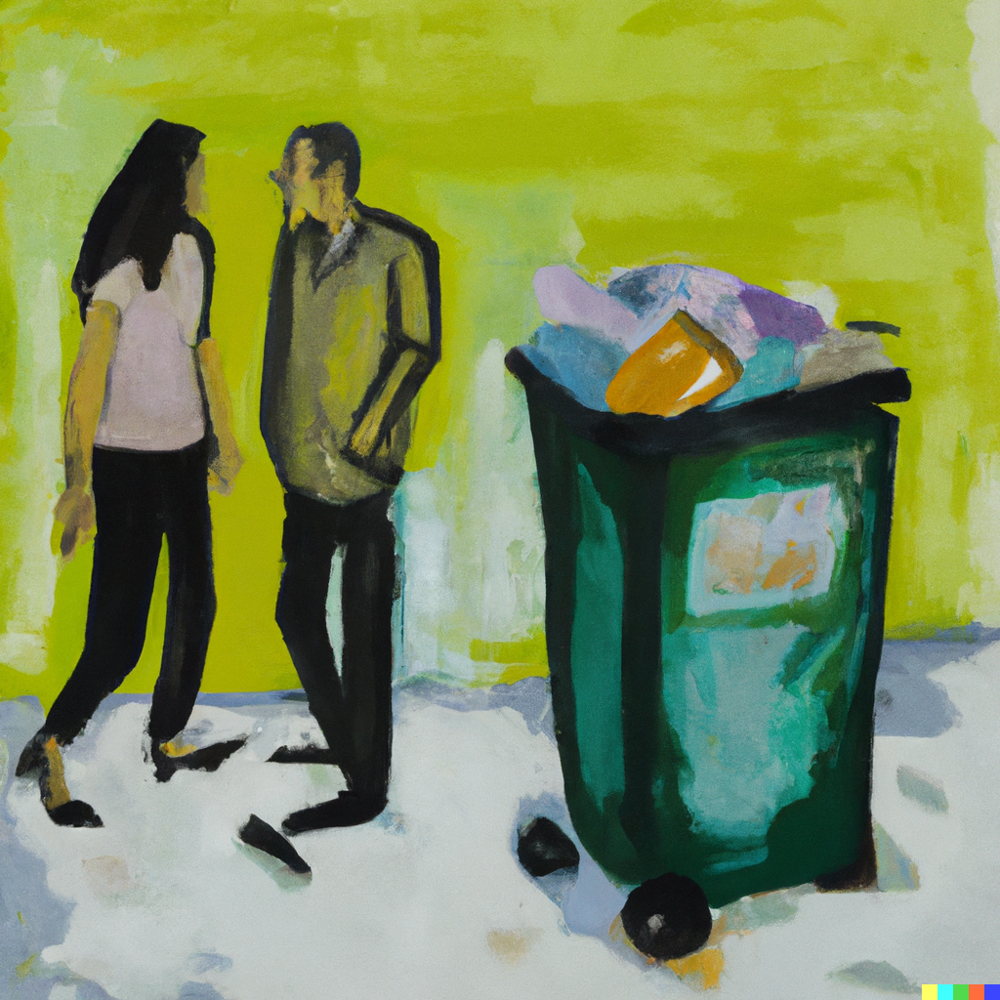

La primavera gioiva i suoi colori e le sue vesti di fiori. Bernardo, berretto incastrato in testa e occhiali scuri con l’elastico dietro la nuca, pareva volare e volteggiare ad un passo da terra. Guardava scorrere le chiome verdi, verdissime, degli alberi in via dei Pioppi. Le sfiorava, le prendeva, le annusava nel vento. Col piede sicuro sul predellino e la mano salda sulla lamiera del camion, questo netturbino sembrava vivere un sogno ad occhi aperti. La linea intermittente sull’asfalto lo divertiva, la velocità non l’impauriva. Lui andava, ogni giorno, così. Nelle svolte, mancine o destre, lasciava il corpo cedere alla forza centrifuga e allargava il braccio, sfiorando tutto ciò che costeggiava la carreggiata, quasi come fosse una danza. Era un tipo del tutto originale Bernardo. Quell’anno compiva 34 anni, faceva quel lavoro da 6, ma nessuno sapeva niente di lui, del suo passato, della sua provenienza. Non si poteva dire che fosse un tipo taciturno o timido, quello no. Citava spesso poeti francesi o scrittori della beat generation americana. Cantava, cantava di continuo, con quegli auricolari all’orecchio che non toglieva mai. Ascoltava Coltrane e Miles Davis, tutto intorno era più bello, più lento. La sua riservatezza faceva sì che deviasse qualsiasi domanda personale, o sulla sua vita privata, gli si ponesse. Si sa soltanto che quando nacque i genitori erano già in avanti con l’età e lo lasciarono, per così dire, “orfano”, a soli 21 anni. Diplomato al liceo scientifico, lasciandosi alle spalle una incredibile e perfetta sfilza di 6. Passato alla maturità con 60. Lineare, perfetto, efficace, invisibile. Condivideva una casa con un cingalese balbuziente ed un chiromante indiano, al settimo piano di un palazzone di cemento in via Isonzo. Questo è in breve ciò che conosciamo di Bernardo; torniamo sulla strada adesso. Passata piazza Firenze, sballottato qua e la dalle curve e dalle brusche frenate, rimaneva aggrappato al camion guidato dal collega Fabrizio, burbero meridionale di poche parole. Stop. Scendere. Prendere. Trascinare. Gettare. Salire. Cenno. Via. Stop. Scendere. Prendere. Trascinare. Gettare. Salire. Cenno. Avanti così fino a via Guglielmo Silva. Già, perché li accadeva qualcosa di diverso. Va fatto presente che il servizio al quale lavorava prevedeva un ritiro porta a porta dell’immondizia e che a loro spettava la presa in carico dell’indifferenziata. In via Guglielmo Silva, una volta raccolti i sacchi della zona dove il camion sostava, il nostro famigerato netturbino si abbassava la tesa del cappello, inforcava bene gli occhiali e, data un ultima occhiata di controllo, si fiondava al civico 47. A questo civico, e poi capiremo perché, ritirava in modo furtivo tutto : carta, plastica, indifferenziato e umido. Con l’accortezza di non essere visto dal collega balzava nuovamente sul mezzo, imboscava i sacchi in un intercapedine tra le lamiere, dove avrebbe potuto riprenderli, e faceva cenno di ripartire. Gli stessi sacchi li mollava, poi, in un luogo “sicuro” dove li avrebbe recuperati, con l’auto, finito il turno. Questo fatto si ripeteva da più di un anno, ogni maledetto giorno. C’è chi racconta di aver visto Bernardo portarsi via i sacchi di via Silva 47 persino nei giorni festivi o di riposo dal lavoro. Tutto questo avveniva a causa di una donna e della la mattina in cui Bernardo l’aveva vista per la prima volta.
Fu in un giorno d’inverno. La vide uscire di fretta dal portone, una donna di una decina d’anni più grande di lui. Mora, alta e di una magrezza raffinata e poderosa. Nella fretta di uscire la donna lo colpì con una spallata. Con uno sguardo sufficiente ma cordiale si scusò, per poi tirare dritta lungo il marciapiede, battendo le suole ed i tacchi come in un tango. Bernardo restò imbambolato, congelato, fulminato da quello sguardo, da quelle gambe che sparirono dietro il primo incrocio. Solo il clacson prepotente del camion, qualche istante dopo, riuscì a riesumarlo da quello stato catatonico. Da quel giorno Bernardo non sarebbe più riuscito a togliersi dalla testa quella splendida creatura, quella donna così perfetta. Quel sogno. Quella perversione. Non sarebbe riuscito a vederla così da vicino nuovamente, non avrebbe sostenuto emotivamente la vista di ciò che lo aveva travolto e affondato così in profondità. Voleva conoscerla, sapere tutto di lei. Essere preparato quando ci avrebbe parlato. E così, per mesi e mesi, rovistò tra le cose che quella donna gettava. Studiava ciò che scartava, ciò che faceva avanzare del pranzo e della cena. In poco tempo capì che viveva sola. Imparò a riconoscere quando qualcuno le faceva visita e chi le faceva visita. Sapeva quando se ne andava per qualche giorno, quando comprava vestiti nuovi, cosa comprava, cosa le piaceva. Sapeva cosa e quanto beveva, cosa e quanto mangiava. Sapeva quanto spendeva. La stanza di Bernardo era diventata un museo di ritagli, pezzetti, reliquie, trovate nei sacchi, tra gli scarti, di quella donna. Qualsiasi novità lo rendeva più curioso, più ossessionato da lei. Iniziò a seguirla, di nascosto, nei luoghi dove questa si recava più spesso. Gli scontrini sono come delle mappe della routine delle persone. Era grazie a questi che sapeva dove e quando trovarla. Questo giorno, però, qualcosa andò storto. Bernardo si precipitò a grandi falcate al civico 47, prese i sacchi, e scattò nuovamente verso il camion. Tra il marciapiede e la strada, tra le auto parcheggiate, un abito ed una gonna nera lo bloccarono. Era lei. “Perché lo fai?” Bernardo si sentì come trafitto e perforato da una lancia, da parte a parte. Umiliato e colto con le mani nel sacco (è proprio il caso di dirlo) non riusciva a proferire parola. “Dimmi perché lo fai. Credevi che non se ne sarebbe accorto nessuno? Che nessuno avrebbe notato che portavi via questi sacchi, soltanto i miei, anche quando per strada non c’era il camion col tuo collega e tu non avevi la divisa? Come hai potuto pensare che non me ne sarei mai accorta?” Le gambe di Bernardo iniziarono a cedere all’altezza dei ginocchi. Fabrizio, intanto, suonava il clacson e fischiava alla donna facendo grandi smorfie ed occhiolini. “Io.. Io..” “Dimmi subito chi sei, cosa vuoi da me e perché lo fai.” La donna aveva una voce di piombo. Era decisa ad andare in fondo alla questione, subito, ma non sembrava impaurita ne assediata dall’ira.
Voleva le sue risposte. Bernardo si sedette sull’asfalto lasciando scivolare i sacchi dalle mani. Alzò lo sguardo, si tolse gli occhiali e parlò. “Io non lo so. E’ passato molto tempo. Quella mattina.. quella mattina che io la vidi, la prima volta. Mi è successo qualcosa. Io non potevo dirle niente. Lei è bellissima. Io volevo conoscerla. Io non potevo vederla, non potevo parlarle. Non ci sarei riuscito. Quindi ho fatto tutto questo, per tutto questo tempo, per conoscerla” “Mi hai seguito, tu mi hai seguito” Bernardo impallidì e si passò le mani tra la testa ed il cappello, togliendoselo. “Si, l’ho seguita. Solo qualche volta, da lontano. Semplicemente per poterla vedere” “Quindi?” “Mi scusi… quindi cosa? Io.. Non mi sento ben.. mi dispiace…Io” “Quindi cosa pensi di me, Bernardo?” Pronunciò il suo nome mentre allungava lo sguardo e le dita affusolate e perfette sul cartellino apposto sulla divisa del ragazzo. “Penso che lei sia bellissima, penso che in qualche modo mi sia innamorato, di lei. Io.. mi scusi” “C’è qualcos’altro che vuole dirmi, Bernardo?” “Penso che dovrebbe fare più attenzione alla differenziata” Una risata potente, sincera e fragorosa si sprigionò nella bocca di entrambi. Una risata che fece crollare i muri della follia del ragazzo e dello sbigottimento della donna. La tensione, la paura e la vergogna scivolarono sulla strada per poi dissolversi tra le ruote delle auto nel traffico. I due si diedero appuntamento per la sera stessa in un bar li vicino e dio solo sa cosa successe poi.
 Walter Valentini